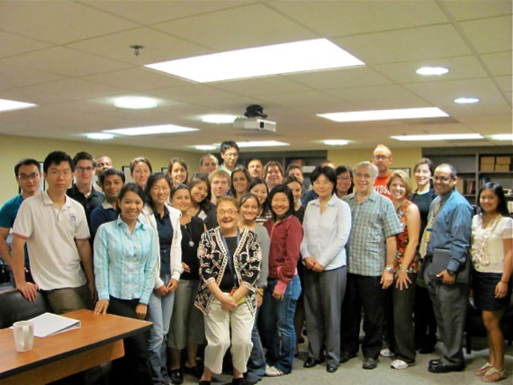

WELCOME TO THE i-CTERM!
The laboratories of the cellular tissue-engineering and regenerative medicine group headed by Dr. Peter Lelkes, are located on the 8th floor (Room 825) of the College of Engineering building on the Main Campus of Temple University.


© 2010 i-CTERM